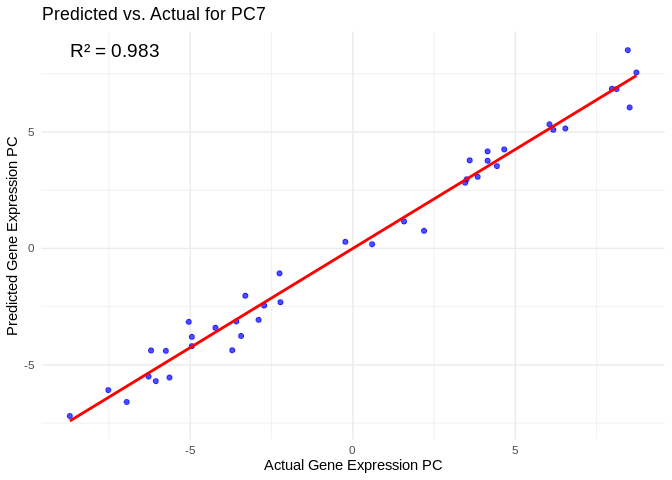
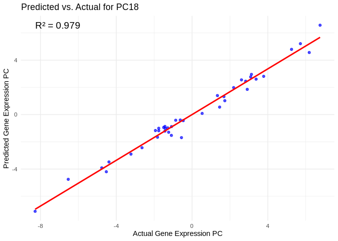
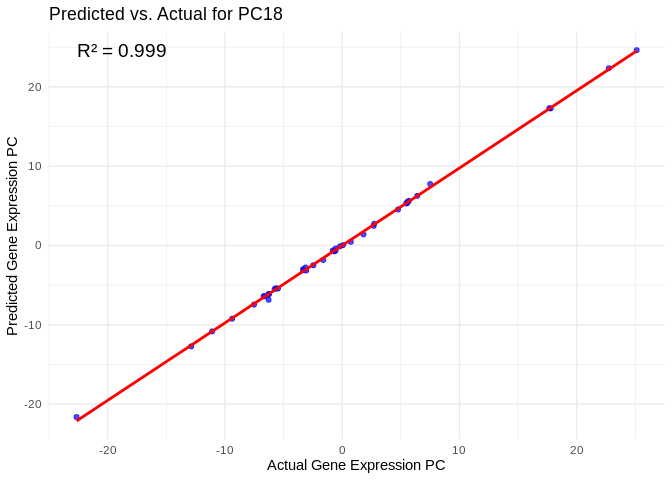
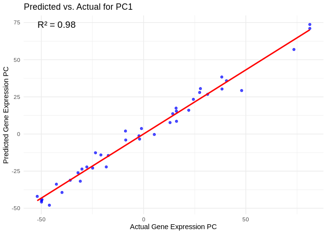
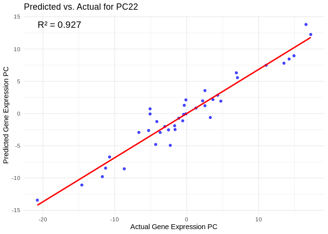
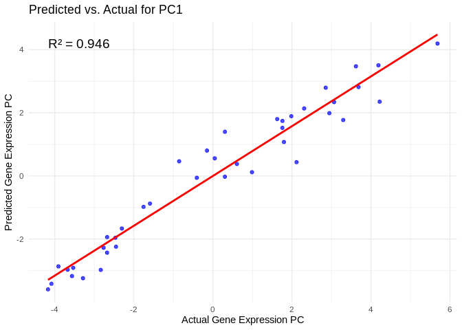

Applying ML model using multiomic predictors – miRNA + lncRNA + methylation as predictors of gene expression
Inputs:
RNA counts matrix (raw):
../output/02.20-D-Apul-RNAseq-alignment-HiSat2/apul-gene_count_matrix.csvGene sets of interest:
../output/21-Apul-annotate-miRNA-mRNA-WGCNA/filtered-gene-sets/sRNA/miRNA counts matrix (raw):
../output/03.10-D-Apul-sRNAseq-expression-DESeq2/Apul_miRNA_ShortStack_counts_formatted.txtlncRNA counts matrix (raw):
../output/08-Apul-lncNRA/counts.txtWGBS data (processed): Performed in
/timeseries_molecular/D-Apul/output/15.5-Apul-bismark/, data in large-file storage.sample metadata:
../../M-multi-species/data/rna_metadata.csv
1 Set up
2 Load libraries
library(tidyverse)
library(ggplot2)
library(DESeq2)
library(igraph)
library(psych)
library(tidygraph)
library(ggraph)
library(WGCNA)
library(edgeR)
library(reshape2)
library(ggcorrplot)
library(corrplot)
library(rvest)
library(purrr)
library(pheatmap)
library(glmnet)
library(caret)
library(factoextra)
library(vegan)
library(ggfortify)
library(genefilter)
library(scales)The model includes random processes, so set a seed for reproducability. Note: for final results, should we consider bootstrapping to ensure reported results are representative?
set.seed(703)3 Load and format data
3.1 RNA-seq data (mRNA, miRNA, lncRNA)
### mRNA ###
# raw gene counts data (will filter and variance stabilize)
Apul_genes <- read_csv("../output/02.20-D-Apul-RNAseq-alignment-HiSat2/apul-gene_count_matrix.csv")## Rows: 44371 Columns: 41
## ── Column specification ────────────────────────────────────────────────────────
## Delimiter: ","
## chr (1): gene_id
## dbl (40): 1A1, 1A10, 1A12, 1A2, 1A8, 1A9, 1B1, 1B10, 1B2, 1B5, 1B9, 1C10, 1C...
##
## ℹ Use `spec()` to retrieve the full column specification for this data.
## ℹ Specify the column types or set `show_col_types = FALSE` to quiet this message.Apul_genes <- as.data.frame(Apul_genes)
# format gene IDs as rownames (instead of a column)
rownames(Apul_genes) <- Apul_genes$gene_id
Apul_genes <- Apul_genes%>%select(!gene_id)
### miRNA ###
# raw miRNA counts (will filter and variance stabilize)
Apul_miRNA <- read.table(file = "../output/03.10-D-Apul-sRNAseq-expression-DESeq2/Apul_miRNA_ShortStack_counts_formatted.txt", header = TRUE, sep = "\t", check.names = FALSE)
### lncRNA ###
# raw lncRNA counts (will filter and variance stabilize)
Apul_lncRNA_full <- read.table("../output/08-Apul-lncRNA/counts.txt", header = TRUE, sep = "\t", skip = 1)
# Remove info on genomic location, set lncRNA IDs as rownames
rownames(Apul_lncRNA_full) <- Apul_lncRNA_full$Geneid
Apul_lncRNA <- Apul_lncRNA_full %>% select(-Geneid, -Chr, -Start, -End, -Strand, -Length)
### load and format metadata ###
metadata <- read_csv("../../M-multi-species/data/rna_metadata.csv")%>%select(AzentaSampleName, ColonyID, Timepoint) %>%
filter(grepl("ACR", ColonyID))## New names:
## Rows: 117 Columns: 19
## ── Column specification
## ──────────────────────────────────────────────────────── Delimiter: "," chr
## (13): SampleName, WellNumber, AzentaSampleName, ColonyID, Timepoint, Sam... dbl
## (5): SampleNumber, Plate, TotalAmount-ng, Volume-uL, Conc-ng.uL lgl (1):
## MethodUsedForSpectrophotometry
## ℹ Use `spec()` to retrieve the full column specification for this data. ℹ
## Specify the column types or set `show_col_types = FALSE` to quiet this message.
## • `` -> `...19`metadata$Sample <- paste0(metadata$ColonyID, "-", metadata$Timepoint)
rownames(metadata) <- metadata$Sample## Warning: Setting row names on a tibble is deprecated.colonies <- unique(metadata$ColonyID)
# Rename gene column names to include full sample info
colnames(Apul_genes) <- metadata$Sample[match(colnames(Apul_genes), metadata$AzentaSampleName)]
# Rename miRNA column names to match formatting
colnames(Apul_miRNA) <- sub("_.*", "", colnames(Apul_miRNA))
colnames(Apul_miRNA) <- metadata$Sample[match(colnames(Apul_miRNA), metadata$AzentaSampleName)]
# rename lncRNA colin names to include full sample info
colnames(Apul_lncRNA) <- sub("...data.", "", colnames(Apul_lncRNA))
colnames(Apul_lncRNA) <- sub(".sorted.bam", "", colnames(Apul_lncRNA))
colnames(Apul_lncRNA) <- metadata$Sample[match(colnames(Apul_lncRNA), metadata$AzentaSampleName)]3.2 WGBS data
#pull processed files from Gannet
# Note: Unfortunately we can't use the `cache` feature to make this process more time efficient, as it doesn't support long vectors
# Define the base URL
base_url <- "https://gannet.fish.washington.edu/seashell/bu-github/timeseries_molecular/D-Apul/output/15.5-Apul-bismark/"
# Read the HTML page
page <- read_html(base_url)
# Extract links to files
file_links <- page %>%
html_nodes("a") %>%
html_attr("href")
# Filter for files ending in "processed.txt"
processed_files <- file_links[grepl("processed\\.txt$", file_links)]
# Create full URLs
file_urls <- paste0(base_url, processed_files)
# Function to read a file from URL
read_processed_file <- function(url) {
read_table(url, col_types = cols(.default = "c")) # Read as character to avoid parsing issues
}
# Import all processed files into a list
processed_data <- lapply(file_urls, read_processed_file)
# Name the list elements by file name
names(processed_data) <- processed_files
# Print structure of imported data
str(processed_data)
# add a header row that has "CpG" for the first column and "sample" for the second column, which will be populated by the file name
processed_data <- Map(function(df, filename) {
colnames(df) <- c("CpG", filename) # Rename columns
return(df)
}, processed_data, names(processed_data)) # Use stored file names
#merge files together by "CpG"
merged_data <- purrr::reduce(processed_data, full_join, by = "CpG")
# Print structure of final merged data
str(merged_data)Replace any NA with 0.
# Convert all columns (except "CpG") to numeric and replace NAs with 0
merged_data <- merged_data %>%
mutate(across(-CpG, as.numeric)) %>% # Convert all except CpG to numeric
mutate(across(-CpG, ~ replace_na(.x, 0))) # Replace NA with 0 in numeric columns3.3 Filter data sets
Only keep CpGs that have a non-zero value in all samples.
filtered_wgbs <- merged_data %>% filter(if_all(-CpG, ~ .x > 0))
# Ensure it's formatted as a data frame
filtered_wgbs <- as.data.frame(filtered_wgbs)
# Only keep the sample information in the column name.
colnames(filtered_wgbs) <- gsub("^(.*?)_.*$", "\\1", colnames(filtered_wgbs))
# Set CpG IDs to rownames
rownames(filtered_wgbs) <- filtered_wgbs$CpG
filtered_wgbs <- filtered_wgbs %>% select(-CpG)
nrow(merged_data)
nrow(filtered_wgbs)We had 12,093,025 CpGs before filtering and have only 507 after filtering. This makes sense because most CpGs were not methylated in all samples.
Save filtered set to make code reruns/knitting quicker
write.csv(filtered_wgbs, "../output/22.2-Apul-multiomic-machine-learning/filtered-WGBS-CpG-counts.csv")If knitting/rerunning code, we can load in this filtered data here, instead of loading raw counts and reprocessing.
filtered_wgbs <- read.csv("../output/22.2-Apul-multiomic-machine-learning/filtered-WGBS-CpG-counts.csv", row.names = 1, check.names = FALSE)Only keep genes, miRNA, and lncRNA that are present in at least one sample
# genes
Apul_genes_red <- Apul_genes[rowSums(Apul_genes) != 0, ]
# miRNA
Apul_miRNA_red <- Apul_miRNA[rowSums(Apul_miRNA) != 0, ]
# lncRNA
Apul_lncRNA_red <- Apul_lncRNA[rowSums(Apul_lncRNA) != 0, ]
cat("Retained ", nrow(Apul_genes_red), " of ", nrow(Apul_genes), "genes; ",
nrow(Apul_miRNA_red), " of ", nrow(Apul_miRNA), " miRNA; and ",
nrow(Apul_lncRNA_red), " of ", nrow(Apul_lncRNA), " lncRNA")## Retained 35869 of 44371 genes; 51 of 51 miRNA; and 20559 of 24181 lncRNApOverA: Specifying the minimum count for a proportion of samples for each gene. Setting 3/40 = 0.08. This would retain genes that are only expressed in a single season in a couple of the colonies. Additionally, setting the minimum count so that the minimum number of samples must have a gene count above a certain threshold.
genes:
filt <- filterfun(pOverA(0.08, 5))
#create filter for the counts data
gfilt <- genefilter(Apul_genes_red, filt)
#identify genes to keep by count filter
gkeep <- Apul_genes_red[gfilt,]
#identify gene lists
gn.keep <- rownames(gkeep)
#gene count data filtered in PoverA, P percent of the samples have counts over A
Apul_genes_filt <- as.data.frame(Apul_genes_red[which(rownames(Apul_genes_red) %in% gn.keep),])
#How many rows do we have before and after filtering?
cat("Pre-filtering:", nrow(Apul_genes_red), "; Post-filtering:", nrow(Apul_genes_filt))## Pre-filtering: 35869 ; Post-filtering: 25730miRNA:
mifilt <- filterfun(pOverA(0.08, 5))
#create filter for the counts data
mifilt <- genefilter(Apul_miRNA_red, mifilt)
#identify miRNA to keep by count filter
mikeep <- Apul_miRNA_red[mifilt,]
#identify miRNA to keep by count filter
mikeep <- Apul_miRNA_red[mifilt,]
#identify miRNA lists
mi.keep <- rownames(mikeep)
#miRNA count data filtered in PoverA, P percent of the samples have counts over A
Apul_miRNA_filt <- as.data.frame(Apul_miRNA_red[which(rownames(Apul_miRNA_red) %in% mi.keep),])
#How many rows do we have before and after filtering?
cat("Pre-filtering:", nrow(Apul_miRNA_red), "; Post-filtering:", nrow(Apul_miRNA_filt))## Pre-filtering: 51 ; Post-filtering: 47Of the 51 miRNA, 47 were retained. Which were removed?
setdiff(rownames(Apul_miRNA_red), rownames(Apul_miRNA_filt))## [1] "Cluster_5685" "Cluster_11565" "Cluster_13647" "Cluster_14633"lncRNA:
lncfilt <- filterfun(pOverA(0.08, 5))
#create filter for the counts data
lncfilt <- genefilter(Apul_lncRNA_red, lncfilt)
#identify lncRNA to keep by count filter
lnckeep <- Apul_lncRNA_red[lncfilt,]
#identify lncRNA to keep by count filter
lnckeep <- Apul_lncRNA_red[lncfilt,]
#identify lncRNA lists
lnc.keep <- rownames(lnckeep)
#lncRNA count data filtered in PoverA, P percent of the samples have counts over A
Apul_lncRNA_filt <- as.data.frame(Apul_lncRNA_red[which(rownames(Apul_lncRNA_red) %in% lnc.keep),])
#How many rows do we have before and after filtering?
cat("Pre-filtering:", nrow(Apul_lncRNA_red), "; Post-filtering:", nrow(Apul_lncRNA_filt))## Pre-filtering: 20559 ; Post-filtering: 160063.4 Transform data
Set the order of genes, miRNA, lncRNA, wgbs, and metadata to all be the same.
# Ensure rownames of metadata are used as the desired column order
desired_order <- rownames(metadata)
# Reorder data frame columns
Apul_genes_filt <- Apul_genes_filt[, desired_order]
Apul_miRNA_filt <- Apul_miRNA_filt[, desired_order]
Apul_lncRNA_filt <- Apul_lncRNA_filt[, desired_order]
filtered_wgbs <- filtered_wgbs[, desired_order]
# Check they all match
identical(rownames(metadata), colnames(Apul_genes_filt))## [1] TRUEidentical(rownames(metadata), colnames(Apul_miRNA_filt))## [1] TRUEidentical(rownames(metadata), colnames(Apul_lncRNA_filt))## [1] TRUEidentical(rownames(metadata), colnames(filtered_wgbs))## [1] TRUEUse a variance stabilized transformation for all four data sets. Variance stabilization essentially tries to make variance independent of the mean
(Is this the most appropriate design to use?)
genes:
dds_genes <- DESeqDataSetFromMatrix(countData = Apul_genes_filt,
colData = metadata,
design = ~Timepoint+ColonyID)## converting counts to integer mode
## Warning in DESeqDataSet(se, design = design, ignoreRank): some variables in
## design formula are characters, converting to factors
## Note: levels of factors in the design contain characters other than
## letters, numbers, '_' and '.'. It is recommended (but not required) to use
## only letters, numbers, and delimiters '_' or '.', as these are safe characters
## for column names in R. [This is a message, not a warning or an error]# Variance Stabilizing Transformation
vsd_genes <- assay(vst(dds_genes, blind = TRUE))miRNA:
dds_miRNA <- DESeqDataSetFromMatrix(countData = Apul_miRNA_filt,
colData = metadata,
design = ~Timepoint+ColonyID)## Warning in DESeqDataSet(se, design = design, ignoreRank): some variables in
## design formula are characters, converting to factors
## Note: levels of factors in the design contain characters other than
## letters, numbers, '_' and '.'. It is recommended (but not required) to use
## only letters, numbers, and delimiters '_' or '.', as these are safe characters
## for column names in R. [This is a message, not a warning or an error]# Variance Stabilizing Transformation
vsd_miRNA <- varianceStabilizingTransformation(dds_miRNA, blind=TRUE) # Must use varianceStabilizingTransformation() instead of vst() due to few input genes## Note: levels of factors in the design contain characters other than
## letters, numbers, '_' and '.'. It is recommended (but not required) to use
## only letters, numbers, and delimiters '_' or '.', as these are safe characters
## for column names in R. [This is a message, not a warning or an error]vsd_miRNA <- assay(vsd_miRNA)lncRNA:
dds_lncRNA <- DESeqDataSetFromMatrix(countData = Apul_lncRNA_filt,
colData = metadata,
design = ~Timepoint+ColonyID)## Warning in DESeqDataSet(se, design = design, ignoreRank): some variables in
## design formula are characters, converting to factors
## Note: levels of factors in the design contain characters other than
## letters, numbers, '_' and '.'. It is recommended (but not required) to use
## only letters, numbers, and delimiters '_' or '.', as these are safe characters
## for column names in R. [This is a message, not a warning or an error]# Variance Stabilizing Transformation
vsd_lncRNA <- assay(vst(dds_lncRNA, blind = TRUE))Must round wgbs data to whole integers for normalization - need to return to this to decide if this is appropriate.
#round to integers
filtered_wgbs<-filtered_wgbs %>% mutate(across(where(is.numeric), round))
dds_wgbs <- DESeqDataSetFromMatrix(countData = filtered_wgbs,
colData = metadata,
design = ~ Timepoint+ColonyID)## converting counts to integer mode
## Warning in DESeqDataSet(se, design = design, ignoreRank): some variables in
## design formula are characters, converting to factors
## Note: levels of factors in the design contain characters other than
## letters, numbers, '_' and '.'. It is recommended (but not required) to use
## only letters, numbers, and delimiters '_' or '.', as these are safe characters
## for column names in R. [This is a message, not a warning or an error]# Variance Stabilizing Transformation
vsd_wgbs <- assay(varianceStabilizingTransformation(dds_wgbs, blind = TRUE))## Note: levels of factors in the design contain characters other than
## letters, numbers, '_' and '.'. It is recommended (but not required) to use
## only letters, numbers, and delimiters '_' or '.', as these are safe characters
## for column names in R. [This is a message, not a warning or an error]
## -- note: fitType='parametric', but the dispersion trend was not well captured by the
## function: y = a/x + b, and a local regression fit was automatically substituted.
## specify fitType='local' or 'mean' to avoid this message next time.3.5 Islolate gene sets
Read in gene set tables
# genes from WGCNA modules significantly correlated with host biomass
Host_AFDW <- read.table("../output/21-Apul-annotate-miRNA-mRNA-WGCNA/filtered-gene-sets/Host_AFDW.mg.cm2_gene_counts.tab", sep="\t", header=TRUE)
# genes from WGCNA modules significantly correlated with symbiont photosynthesis
Am <- read.table("../output/21-Apul-annotate-miRNA-mRNA-WGCNA/filtered-gene-sets/Am_gene_counts.tab", sep="\t", header=TRUE)
# GO terms related to energy production/usage
ATP_production_GO <- read.table("../output/21-Apul-annotate-miRNA-mRNA-WGCNA/filtered-gene-sets/ATP_production_GO_terms_gene_counts.tab", sep="\t", header=TRUE)
energy_GO <- read.table("../output/21-Apul-annotate-miRNA-mRNA-WGCNA/filtered-gene-sets/energy_usage_storage_GO_terms_gene_counts.tab", sep="\t", header=TRUE)Isolate filtered counts by gene set
vsd_Host_AFDW <- vsd_genes[rownames(vsd_genes) %in% Host_AFDW$gene_id,]
vsd_Am <- vsd_genes[rownames(vsd_genes) %in% Am$gene_id,]
vsd_ATP_production_GO <- vsd_genes[rownames(vsd_genes) %in% ATP_production_GO$gene_id,]
vsd_energy_GO <- vsd_genes[rownames(vsd_genes) %in% energy_GO$gene_id,]4 Feature selection
Reduce dimensionality through feature selection.
nrow(vsd_genes)## [1] 25730nrow(vsd_miRNA)## [1] 47nrow(vsd_lncRNA)## [1] 16006nrow(vsd_wgbs)## [1] 507cat("\n")nrow(vsd_Host_AFDW)## [1] 793nrow(vsd_Am)## [1] 5746nrow(vsd_ATP_production_GO)## [1] 22nrow(vsd_energy_GO)## [1] 284The genes, lncRNA, and WGBS sets are very large, so we need to reduce using dimensionality reduction. We’ll need to do the same for the gene sets, which are also fairly large.
4.1 All genes
# Perform PCA on gene expression matrix
pca_genes <- prcomp(t(vsd_genes), scale. = TRUE)
# Select top PCs that explain most variance (e.g., top 50 PCs)
explained_var_genes <- summary(pca_genes)$importance[2, ] # Cumulative variance explained
num_pcs_genes <- min(which(cumsum(explained_var_genes) > 0.95)) # Keep PCs that explain 95% variance
genes_pcs <- as.data.frame(pca_genes$x[, 1:num_pcs_genes]) # Extract selected PCs
dim(genes_pcs)## [1] 40 3030 PCs summarize 95% of the explained variance in all gene expression
4.2 lncRNA
# Perform PCA on lncRNA expression matrix
pca_lncRNA <- prcomp(t(vsd_lncRNA), scale. = TRUE)
# Select top PCs that explain most variance (e.g., top 50 PCs)
explained_var_lncRNA <- summary(pca_lncRNA)$importance[2, ] # Cumulative variance explained
num_pcs_lncRNA <- min(which(cumsum(explained_var_lncRNA) > 0.95)) # Keep PCs that explain 95% variance
lncRNA_pcs <- as.data.frame(pca_lncRNA$x[, 1:num_pcs_lncRNA]) # Extract selected PCs
dim(lncRNA_pcs)## [1] 40 3131 PCs summarize 95% of the explained variance in lncRNA expression
4.3 miRNA
# Perform PCA on miRNA expression matrix
pca_miRNA <- prcomp(t(vsd_miRNA), scale. = TRUE)
# Select top PCs that explain most variance (e.g., top 50 PCs)
explained_var_miRNA <- summary(pca_miRNA)$importance[2, ] # Cumulative variance explained
num_pcs_miRNA <- min(which(cumsum(explained_var_miRNA) > 0.95)) # Keep PCs that explain 95% variance
miRNA_pcs <- as.data.frame(pca_miRNA$x[, 1:num_pcs_miRNA]) # Extract selected PCs
dim(miRNA_pcs)## [1] 40 2020 PCs summarize 95% of the explained variance in miRNA expression
4.4 WGBS
# Perform PCA on WGBS CpG matrix
pca_wgbs <- prcomp(t(vsd_wgbs), scale. = TRUE)
# Select top PCs that explain most variance (e.g., top 50 PCs)
explained_var_wgbs <- summary(pca_wgbs)$importance[2, ] # Cumulative variance explained
num_pcs_wgbs <- min(which(cumsum(explained_var_wgbs) > 0.95)) # Keep PCs that explain 95% variance
wgbs_pcs <- as.data.frame(pca_wgbs$x[, 1:num_pcs_wgbs]) # Extract selected PCs
dim(wgbs_pcs)## [1] 40 3030 PCs summarize 95% of the explained variance in methylation
4.5 Host_AFDW
# Perform PCA on gene set matrix
pca_Host_AFDW <- prcomp(t(vsd_Host_AFDW), scale. = TRUE)
# Select top PCs that explain most variance (e.g., top 50 PCs)
explained_var_Host_AFDW <- summary(pca_Host_AFDW)$importance[2, ] # Cumulative variance explained
num_pcs_Host_AFDW <- min(which(cumsum(explained_var_Host_AFDW) > 0.95)) # Keep PCs that explain 95% cumulative variance
Host_AFDW_pcs <- as.data.frame(pca_Host_AFDW$x[, 1:num_pcs_Host_AFDW]) # Extract selected PCs
dim(Host_AFDW_pcs)## [1] 40 2929 PCs summarize 95% of the explained variance in genes associated with host biomass (Host AFDW)
4.6 Am
Reduce dimensionality
# Perform PCA on gene set expression matrix
pca_Am <- prcomp(t(vsd_Am), scale. = TRUE)
# Select top PCs that explain most variance (e.g., top 50 PCs)
explained_var_Am <- summary(pca_Am)$importance[2, ] # Cumulative variance explained
num_pcs_Am <- min(which(cumsum(explained_var_Am) > 0.95)) # Keep PCs that explain 95% cumulative variance
Am_pcs <- as.data.frame(pca_Am$x[, 1:num_pcs_Am]) # Extract selected PCs
dim(Am_pcs)## [1] 40 3030 PCs summarize 95% of the explained variance in genes associated with symbiont photosynthesis (Am)
4.7 ATP production GO terms
Reduce dimensionality
# Perform PCA on gene set expression matrix
pca_ATP_prod_GO <- prcomp(t(vsd_ATP_production_GO), scale. = TRUE)
# Select top PCs that explain most variance (e.g., top 50 PCs)
explained_var_ATP_prod_GO <- summary(pca_ATP_prod_GO)$importance[2, ] # Cumulative variance explained
num_pcs_ATP_prod_GO <- min(which(cumsum(explained_var_ATP_prod_GO) > 0.95)) # Keep PCs that explain 95% cumulative variance
ATP_prod_GO_pcs <- as.data.frame(pca_ATP_prod_GO$x[, 1:num_pcs_ATP_prod_GO]) # Extract selected PCs
dim(ATP_prod_GO_pcs)## [1] 40 1111 PCs summarize 95% of the explained variance in genes annotated with ATP production GO terms
4.8 Energy usage/storage GO terms
Reduce dimensionality
# Perform PCA on gene set expression matrix
pca_energy_GO <- prcomp(t(vsd_energy_GO), scale. = TRUE)
# Select top PCs that explain most variance (e.g., top 50 PCs)
explained_var_energy_GO <- summary(pca_energy_GO)$importance[2, ] # Cumulative variance explained
num_pcs_energy_GO <- min(which(cumsum(explained_var_energy_GO) > 0.95)) # Keep PCs that explain 95% cumulative variance
energy_GO_pcs <- as.data.frame(pca_energy_GO$x[, 1:num_pcs_energy_GO]) # Extract selected PCs
dim(energy_GO_pcs)## [1] 40 2727 PCs summarize 95% of the explained variance in genes annotated with ATP production GO terms
5 Merge predictor features
5.1 Merge reduced datasets
I want to use miRNA, lncRNA, and methylation (WGBS) as predictors for gene expression, so I need to merge the features of these three data sets.
# Note which dataset each lncRNA and WGBS PC is associated with
colnames(lncRNA_pcs) <- paste0(colnames(lncRNA_pcs), "_lncRNA")
colnames(miRNA_pcs) <- paste0(colnames(miRNA_pcs), "_miRNA")
colnames(wgbs_pcs) <- paste0(colnames(wgbs_pcs), "_WGBS")
# Triple check that all three data frames have sample names in the same order
identical(rownames(lncRNA_pcs), rownames(wgbs_pcs))## [1] TRUEidentical(rownames(lncRNA_pcs), rownames(miRNA_pcs))## [1] TRUE# Bind (stack dataframes horizontally)
full_pred <- cbind(lncRNA_pcs, miRNA_pcs, wgbs_pcs)
head(full_pred)## PC1_lncRNA PC2_lncRNA PC3_lncRNA PC4_lncRNA PC5_lncRNA PC6_lncRNA
## ACR-225-TP1 -16.652946 73.328741 -4.900662 23.63265 -15.5434633 18.6993987
## ACR-225-TP2 -64.415273 -39.989770 25.849109 31.36694 -2.7418550 16.8817935
## ACR-225-TP3 7.426632 3.836323 2.613068 -18.79839 -2.1512861 8.4294017
## ACR-225-TP4 -44.525340 -22.405730 -26.727351 -12.11801 9.4110284 5.1441162
## ACR-229-TP1 -56.226873 1.285908 -4.624646 -17.85891 0.4800111 0.9084579
## ACR-229-TP2 -23.046364 25.786839 21.772068 -18.73687 -7.1031312 -0.7275392
## PC7_lncRNA PC8_lncRNA PC9_lncRNA PC10_lncRNA PC11_lncRNA
## ACR-225-TP1 -6.606146 3.907170 -24.668541 2.700613 -19.570934
## ACR-225-TP2 -6.297825 10.732377 42.589155 24.811017 -26.751535
## ACR-225-TP3 -1.467871 -17.039753 27.992788 -71.853887 -42.845320
## ACR-225-TP4 18.329047 -4.863639 6.499017 -61.577003 -25.414126
## ACR-229-TP1 25.162031 -37.787739 -4.995677 10.091432 5.796247
## ACR-229-TP2 9.430113 -63.615657 14.032926 20.235658 -1.191159
## PC12_lncRNA PC13_lncRNA PC14_lncRNA PC15_lncRNA PC16_lncRNA
## ACR-225-TP1 14.521305 -2.262914 -41.957968 5.820290 8.3988888
## ACR-225-TP2 23.931986 6.942925 1.163011 -9.992572 8.1105349
## ACR-225-TP3 -13.762339 1.103723 -5.710279 -5.183437 -3.1364670
## ACR-225-TP4 -11.896056 22.104165 2.714092 2.601415 0.1158628
## ACR-229-TP1 -9.434515 6.262263 -1.934178 7.166601 7.3463125
## ACR-229-TP2 -12.910408 -6.829857 2.837974 18.804798 10.0055494
## PC17_lncRNA PC18_lncRNA PC19_lncRNA PC20_lncRNA PC21_lncRNA
## ACR-225-TP1 -11.414071 -8.144753 -7.129114 -5.766714 0.3039167
## ACR-225-TP2 8.257330 -12.779865 2.255193 14.444535 -3.5473589
## ACR-225-TP3 5.373520 4.439530 4.525741 -6.271834 2.2093061
## ACR-225-TP4 -7.026531 -6.954813 -7.076966 10.860342 -3.9469359
## ACR-229-TP1 3.321744 4.570894 3.865441 6.583016 -1.3653023
## ACR-229-TP2 -7.968622 12.486084 7.597807 5.465330 -3.8226527
## PC22_lncRNA PC23_lncRNA PC24_lncRNA PC25_lncRNA PC26_lncRNA
## ACR-225-TP1 3.33621967 6.2624463 7.12577766 -1.1624725 -2.4803030
## ACR-225-TP2 10.36360595 -2.2710427 0.09666598 0.8515688 -0.3120913
## ACR-225-TP3 1.10178240 -3.6705225 -10.74023891 14.7092812 -31.1962830
## ACR-225-TP4 -0.01032393 9.5566511 8.46526275 -15.0129144 38.2439731
## ACR-229-TP1 9.56966429 0.5830298 4.66792421 -5.1182417 0.3595885
## ACR-229-TP2 0.79390943 15.1861516 15.35476257 -4.6161473 8.6759452
## PC27_lncRNA PC28_lncRNA PC29_lncRNA PC30_lncRNA PC31_lncRNA
## ACR-225-TP1 -3.354632 -1.019635 -3.4401091 1.043338 1.360794
## ACR-225-TP2 1.365050 -1.387810 0.7383812 -1.806439 -1.272689
## ACR-225-TP3 7.629537 25.437233 5.4302405 13.490468 -3.264919
## ACR-225-TP4 -7.281209 -28.557006 -3.6872263 -16.900518 5.777254
## ACR-229-TP1 -3.147646 -6.305934 11.2241848 3.291629 -5.355760
## ACR-229-TP2 6.612615 5.732498 32.6675771 -2.783756 1.239237
## PC1_miRNA PC2_miRNA PC3_miRNA PC4_miRNA PC5_miRNA PC6_miRNA
## ACR-225-TP1 2.798740 -1.60103790 0.3902826 -2.78416979 2.89850841 -1.9126175
## ACR-225-TP2 -2.006672 2.35384472 3.3094108 0.68396712 1.00642619 -2.7188868
## ACR-225-TP3 3.402678 0.03989579 2.7920820 -0.98471667 -0.04969853 0.5269023
## ACR-225-TP4 1.743162 -0.74508972 1.7601194 -1.62529700 2.43570856 -1.1716437
## ACR-229-TP1 -1.684434 -3.73740125 -0.7669801 -2.64001620 2.58499410 -1.9776859
## ACR-229-TP2 -3.660540 -1.78878170 1.2071028 -0.01069494 0.49089503 -0.8033196
## PC7_miRNA PC8_miRNA PC9_miRNA PC10_miRNA PC11_miRNA PC12_miRNA
## ACR-225-TP1 0.4024505 -1.7868230 1.17633110 -0.8139795 0.84528773 -0.5757136
## ACR-225-TP2 -0.2493649 -3.5015635 -0.01719534 -0.3481687 -1.19223681 -0.5321468
## ACR-225-TP3 3.1542881 -3.1946856 0.81511665 -2.1479615 0.02257447 -0.3650203
## ACR-225-TP4 -0.6827463 -1.1612550 1.71987368 -1.2097857 -0.69841499 -0.4210997
## ACR-229-TP1 1.3091331 0.6514011 -1.91405432 0.4606718 1.11677702 -1.7419935
## ACR-229-TP2 1.2042832 1.1837645 -2.59581592 0.8979452 -0.30985309 1.1755465
## PC13_miRNA PC14_miRNA PC15_miRNA PC16_miRNA PC17_miRNA PC18_miRNA
## ACR-225-TP1 0.2554555 -0.1297357 -0.4883509 1.38110641 0.16749476 -0.5965978
## ACR-225-TP2 -0.1981750 -0.9609219 -0.1396524 -1.67384952 1.62178054 -0.4466742
## ACR-225-TP3 -1.5374296 0.6401065 -0.5767027 -0.68668664 -1.05804473 -0.3272770
## ACR-225-TP4 1.8524932 0.6855648 -0.5112841 0.07760664 -0.18793380 0.9265410
## ACR-229-TP1 0.8215141 1.3028887 0.4432213 -0.30498022 0.09989403 0.2487335
## ACR-229-TP2 -0.6203428 0.6040737 -0.4276845 -1.61714671 0.63347585 -0.5473325
## PC19_miRNA PC20_miRNA PC1_WGBS PC2_WGBS PC3_WGBS PC4_WGBS
## ACR-225-TP1 -0.17349545 0.03586059 -47.371386 -7.4281666 -15.911669 -1.9801404
## ACR-225-TP2 -0.89143615 0.46667292 3.763531 -8.1177745 5.056844 -0.5106781
## ACR-225-TP3 0.34320992 -0.41047389 3.784780 -7.2719899 6.449627 2.5534316
## ACR-225-TP4 0.37380836 -0.74593072 3.149372 -6.2894599 3.109440 3.4838126
## ACR-229-TP1 -0.39021763 -0.16141186 4.620443 0.7863283 -1.764767 -5.1060003
## ACR-229-TP2 0.08006026 0.19192730 4.614269 -0.2214307 -3.036966 -4.6587985
## PC5_WGBS PC6_WGBS PC7_WGBS PC8_WGBS PC9_WGBS PC10_WGBS
## ACR-225-TP1 4.817743 -1.2987551 2.268259 -0.5752089 2.1437705 -0.1523134
## ACR-225-TP2 1.632951 -10.3927327 4.563777 -4.8349365 1.9806328 -6.6701787
## ACR-225-TP3 6.117338 -5.9982021 4.682503 -13.7502728 7.4823613 1.5927329
## ACR-225-TP4 2.596055 -7.8141716 4.917917 -9.3518752 2.0215227 0.8340144
## ACR-229-TP1 3.500710 0.7757339 12.436617 5.2231857 -2.6032216 4.1532102
## ACR-229-TP2 3.681378 -0.4584829 10.458070 5.2523072 -0.6308566 -0.2433186
## PC11_WGBS PC12_WGBS PC13_WGBS PC14_WGBS PC15_WGBS PC16_WGBS
## ACR-225-TP1 1.1999889 -0.2133351 -0.2022223 1.1702454 -0.3240623 -0.4613926
## ACR-225-TP2 -2.0992700 3.7117384 -2.7824001 1.8365265 -3.3164335 -1.6319654
## ACR-225-TP3 -2.0633762 -5.4812552 3.0632119 -2.9768045 -2.4804053 -1.7654961
## ACR-225-TP4 -0.2796565 5.7409197 -0.9415802 1.2707304 7.0430354 2.5553601
## ACR-229-TP1 -0.2271934 -0.7732254 0.2543079 2.5133914 0.4451549 4.8256273
## ACR-229-TP2 1.6555274 -0.6643908 1.0330861 -0.2804019 1.0525279 0.4234749
## PC17_WGBS PC18_WGBS PC19_WGBS PC20_WGBS PC21_WGBS PC22_WGBS
## ACR-225-TP1 0.2556796 0.04848013 0.1379598 0.163844 0.4163461 -0.2478828
## ACR-225-TP2 4.0691392 6.21452411 -5.3580039 -2.696985 1.7539712 1.0939080
## ACR-225-TP3 2.3378453 -6.08085670 2.2829177 3.437195 -0.2178858 3.0976112
## ACR-225-TP4 -2.2242573 2.59441480 3.1965907 -1.718827 -1.3134491 -6.1534216
## ACR-229-TP1 1.9901032 1.68799711 -2.4572699 4.012089 -1.8905085 1.9925271
## ACR-229-TP2 1.3819023 0.49627020 0.2958164 -1.487058 2.5702578 1.6684459
## PC23_WGBS PC24_WGBS PC25_WGBS PC26_WGBS PC27_WGBS
## ACR-225-TP1 -0.01477822 -0.4024602 0.2823349 0.09620127 0.19132873
## ACR-225-TP2 -2.83840621 0.3542538 2.0758895 1.60663820 0.05388139
## ACR-225-TP3 -0.23924425 -0.4659744 -0.3007130 0.26198619 -0.23169049
## ACR-225-TP4 2.94984959 0.9442884 -2.2553056 -0.51859589 -0.02708711
## ACR-229-TP1 2.35415772 -2.9270652 0.4592204 2.00858242 -0.73890630
## ACR-229-TP2 0.25382606 1.4273242 -0.6150447 -2.84497287 0.11903672
## PC28_WGBS PC29_WGBS PC30_WGBS
## ACR-225-TP1 0.02296127 0.31068945 -0.3600702
## ACR-225-TP2 2.45735398 -0.01454505 0.6784057
## ACR-225-TP3 -1.85458312 -0.53013267 -0.3520069
## ACR-225-TP4 0.20395801 -0.80341258 -1.4896686
## ACR-229-TP1 0.24333281 -2.07909037 -2.5953092
## ACR-229-TP2 -3.70723373 -2.71780970 3.11182425.2 Merge raw datsets
I also want to try using individiual miRNA/lncRNA/CpGs as predictors, instead of the reduced PCs. Let’s also create a merged dataset that contains the variance stabilized counts for all miRNA, lncRNA, and CpGs.
# Triple check that all three data frames have sample names in the same order
identical(colnames(vsd_lncRNA), colnames(vsd_miRNA))## [1] TRUEidentical(colnames(vsd_lncRNA), colnames(vsd_wgbs))## [1] TRUE# Bind (stack dataframes vertically, so that they match by column/sample)
full_pred_counts <- rbind(vsd_lncRNA, vsd_miRNA, vsd_wgbs)
# Transform so that samples are on rows and features are in columns
full_pred_counts <- t(full_pred_counts)
dim(full_pred_counts)## [1] 40 16560Ok, now we can run the model!
The below code uses both predictors (miRNA+lncRNA+CpGs) and responses (genes) that have been reduced using PCs.
7 All genes
Let’s start by just throwing all our genes in.
miRNA + lncRNA + methylation as predictors of expression for all genes
7.1 The model
# Ensure sample matching between gene and miRNA+lncRNA+methylation PCs
common_samples <- intersect(rownames(genes_pcs), rownames(full_pred))
genes_pcs <- genes_pcs[common_samples, ]
full_pred <- full_pred[common_samples, ]Train elastic models to predict gene expression PCs from miRNA+lncRNA+methylation PCs.
train_models <- function(response_pcs, predictor_pcs) {
models <- list()
for (pc in colnames(response_pcs)) {
y <- response_pcs[[pc]] # Gene expression PC
X <- as.matrix(predictor_pcs) # miRNA+lncRNA+methylation PCs as predictors
# Train elastic net model (alpha = 0.5 for mix of LASSO & Ridge)
model <- cv.glmnet(X, y, alpha = 0.05)
models[[pc]] <- model
}
return(models)
}
# Train models predicting gene expression PCs from miRNA+lncRNA+methylation PCs
models_all <- train_models(genes_pcs, full_pred)Extract feature importance.
get_feature_importance <- function(models) {
importance_list <- lapply(models, function(model) {
coefs <- as.matrix(coef(model, s = "lambda.min"))[-1, , drop = FALSE] # Convert to regular matrix & remove intercept
# Convert to data frame
coefs_df <- data.frame(Feature = rownames(coefs), Importance = as.numeric(coefs))
return(coefs_df)
})
# Combine feature importance across all predicted gene PCs
importance_df <- bind_rows(importance_list) %>%
group_by(Feature) %>%
summarize(MeanImportance = mean(abs(Importance)), .groups = "drop") %>%
arrange(desc(MeanImportance))
return(importance_df)
}
feature_importance_all <- get_feature_importance(models_all)
head(feature_importance_all, 20) # Top 20 predictive epigenetic features## # A tibble: 20 × 2
## Feature MeanImportance
## <chr> <dbl>
## 1 PC16_miRNA 1.03
## 2 PC18_miRNA 0.895
## 3 PC9_miRNA 0.687
## 4 PC17_miRNA 0.626
## 5 PC14_miRNA 0.618
## 6 PC11_miRNA 0.614
## 7 PC15_miRNA 0.600
## 8 PC7_miRNA 0.595
## 9 PC12_miRNA 0.586
## 10 PC10_miRNA 0.577
## 11 PC19_miRNA 0.576
## 12 PC20_miRNA 0.562
## 13 PC5_miRNA 0.448
## 14 PC6_miRNA 0.442
## 15 PC13_miRNA 0.438
## 16 PC4_miRNA 0.418
## 17 PC2_miRNA 0.410
## 18 PC8_miRNA 0.397
## 19 PC3_miRNA 0.365
## 20 PC1_miRNA 0.327Evaluate performance.
evaluate_model_performance <- function(models, response_pcs, predictor_pcs) {
results <- data.frame(PC = colnames(response_pcs), R2 = NA)
for (pc in colnames(response_pcs)) {
y <- response_pcs[[pc]]
X <- as.matrix(predictor_pcs)
model <- models[[pc]]
preds <- predict(model, X, s = "lambda.min")
R2 <- cor(y, preds)^2 # R-squared metric
results[results$PC == pc, "R2"] <- R2
}
return(results)
}
performance_results_all <- evaluate_model_performance(models_all, genes_pcs, full_pred)
summary(performance_results_all$R2)## Min. 1st Qu. Median Mean 3rd Qu. Max. NA's
## 0.1811 0.8549 0.9812 0.8504 0.9984 0.9992 47.2 Results
Plot results.
# Select top 20 predictive features
top_features_all <- feature_importance_all %>% top_n(20, MeanImportance)
# Plot
ggplot(top_features_all, aes(x = reorder(Feature, MeanImportance), y = MeanImportance)) +
geom_bar(stat = "identity", fill = "steelblue") +
coord_flip() + # Flip for readability
theme_minimal() +
labs(title = "Top 20 Predictive Epigenetic Features",
x = "Feature",
y = "Mean Importance")
ggplot(performance_results_all, aes(x = PC, y = R2)) +
geom_point(color = "darkred", size = 3) +
geom_hline(yintercept = mean(performance_results_all$R2, na.rm = TRUE), linetype = "dashed", color = "blue") +
theme_minimal() +
labs(title = "Model Performance Across Gene Expression PCs",
x = "Gene Expression PC",
y = "R² (Variance Explained)") +
theme(axis.text.x = element_text(angle = 45, hjust = 1)) # Rotate labels## Warning: Removed 4 rows containing missing values or values outside the scale range
## (`geom_point()`).
# Mean explained variance
mean(!is.na(performance_results_all$R2))## [1] 0.8666667View components associated with PCs (need to fix this code to work with the hybrid predictive input)
# # Get the PCA rotation (loadings) matrix from each PCA
# lncRNA_loadings <- pca_lncRNA$rotation # Each column corresponds to a PC
# miRNA_loadings <- pca_miRNA$rotation # Each column corresponds to a PC
# wgbs_loadings <- pca_wgbs$rotation # Each column corresponds to a PC
#
# # Identify the top predictive PCs (from feature importance)
# all_top_predictive_pcs <- feature_importance_all$Feature[1:5] # Select top 5 most predictive PCs
#
# # Extract the loadings for those PCs
# top_loadings <- wgbs_loadings[, top_predictive_pcs, drop = FALSE]
#
# # Convert to data frame and reshape for plotting
# top_loadings_df <- as.data.frame(top_loadings) %>%
# rownames_to_column(var = "CpG") %>%
# pivot_longer(-CpG, names_to = "Methylation_PC", values_to = "Loading")
#
# # View top CpGs contributing most to each PC
# top_cpgs <- top_loadings_df %>%
# group_by(Methylation_PC) %>%
# arrange(desc(abs(Loading))) %>%
# slice_head(n = 20) # Select top 10 CpGs per PC
#
# print(top_cpgs)View top 20 CpGs associated with PC9 (the most important PC)
# print(top_cpgs%>%filter(Methylation_PC=="PC9"))# ggplot(top_cpgs, aes(x = reorder(CpG, abs(Loading)), y = Loading, fill = Methylation_PC)) +
# geom_bar(stat = "identity") +
# coord_flip() +
# theme_minimal() +
# labs(title = "Top CpGs Contributing to Most Predictive Methylation PCs",
# x = "CpG Site",
# y = "Loading Strength") +
# facet_grid(~Methylation_PC, scales = "free_y") # Separate plots for each PCView predicted vs actual gene expression values to evaluate model.
# Choose a gene expression PC to visualize (e.g., the most predictable one)
best_pc <- performance_results_all$PC[which.max(performance_results_all$R2)]
# Extract actual and predicted values for that PC
actual_values <- genes_pcs[[best_pc]]
predicted_values <- predict(models_all[[best_pc]], as.matrix(full_pred), s = "lambda.min")
# Create data frame
prediction_df <- data.frame(
Actual = actual_values,
Predicted = predicted_values
)
# Scatter plot with regression line
ggplot(prediction_df, aes(x = Actual, y = lambda.min)) +
geom_point(color = "blue", alpha = 0.7) +
geom_smooth(method = "lm", color = "red", se = FALSE) +
theme_minimal() +
labs(title = paste("Predicted vs. Actual for", best_pc),
x = "Actual Gene Expression PC",
y = "Predicted Gene Expression PC") +
annotate("text", x = min(actual_values), y = max(predicted_values),
label = paste("R² =", round(max(performance_results_all$R2, na.rm=TRUE), 3)),
hjust = 0, color = "black", size = 5)## `geom_smooth()` using formula = 'y ~ x'
ggplot(performance_results_all, aes(y = R2)) +
geom_boxplot(fill = "lightblue", alpha = 0.7) +
theme_minimal() +
labs(title = "Distribution of Predictive Performance (R²) Across PCs",
y = "R² (Variance Explained)")## Warning: Removed 4 rows containing non-finite outside the scale range
## (`stat_boxplot()`).# Compute correlation between actual and predicted gene expression PCs
predicted_matrix <- sapply(models_all, function(m) predict(m, as.matrix(full_pred), s = "lambda.min"))
# Ensure matrices are the same size
predicted_matrix <- predicted_matrix[, colnames(genes_pcs), drop = FALSE] # Align columns
# remove 0 variance columns
predicted_matrix <- predicted_matrix[, apply(predicted_matrix, 2, function(col) sd(col, na.rm = TRUE) > 0)]
# Compute correlation matrix, handling missing values
cor_matrix <- cor(predicted_matrix, as.matrix(genes_pcs), use = "complete.obs")
# Replace NA or Inf values with zero
cor_matrix[is.na(cor_matrix) | is.infinite(cor_matrix)] <- 0
# Plot heatmap
pheatmap(cor_matrix, color = colorRampPalette(c("blue", "white", "red"))(100),
main = "Correlation Between Actual and Predicted Gene Expression PCs",
cluster_rows = FALSE,
cluster_cols = FALSE,
fontsize = 10)8 Host biomass (Host_AFDW)
8.1 The model
Train elastic models to predict gene expression PCs from miRNA expression.
train_models <- function(response_pcs, predictor_pcs) {
models <- list()
for (pc in colnames(response_pcs)) {
y <- response_pcs[[pc]] # Gene expression PC
X <- as.matrix(predictor_pcs) # miRNA+lncRNA+methylation PCs as predictors
# Train elastic net model (alpha = 0.5 for mix of LASSO & Ridge)
model <- cv.glmnet(X, y, alpha = 0.5)
models[[pc]] <- model
}
return(models)
}
# Train models predicting gene expression PCs from miRNA+lncRNA+methylation PCs
models_Host_AFDW <- train_models(Host_AFDW_pcs, full_pred)Extract feature importance.
get_feature_importance <- function(models) {
importance_list <- lapply(models, function(model) {
coefs <- as.matrix(coef(model, s = "lambda.min"))[-1, , drop = FALSE] # Convert to regular matrix & remove intercept
# Convert to data frame
coefs_df <- data.frame(Feature = rownames(coefs), Importance = as.numeric(coefs))
return(coefs_df)
})
# Combine feature importance across all predicted gene PCs
importance_df <- bind_rows(importance_list) %>%
group_by(Feature) %>%
summarize(MeanImportance = mean(abs(Importance)), .groups = "drop") %>%
arrange(desc(MeanImportance))
return(importance_df)
}
feature_importance_Host_AFDW <- get_feature_importance(models_Host_AFDW)
head(feature_importance_Host_AFDW, 20) # Top predictive features## # A tibble: 20 × 2
## Feature MeanImportance
## <chr> <dbl>
## 1 PC20_miRNA 0.0906
## 2 PC18_miRNA 0.0771
## 3 PC17_miRNA 0.0762
## 4 PC19_miRNA 0.0760
## 5 PC16_miRNA 0.0753
## 6 PC8_miRNA 0.0689
## 7 PC3_miRNA 0.0674
## 8 PC13_miRNA 0.0672
## 9 PC11_miRNA 0.0669
## 10 PC7_miRNA 0.0663
## 11 PC9_miRNA 0.0581
## 12 PC27_WGBS 0.0527
## 13 PC26_WGBS 0.0516
## 14 PC2_miRNA 0.0505
## 15 PC14_miRNA 0.0471
## 16 PC5_miRNA 0.0463
## 17 PC12_miRNA 0.0440
## 18 PC21_WGBS 0.0430
## 19 PC13_WGBS 0.0430
## 20 PC11_WGBS 0.0354Evaluate performance.
evaluate_model_performance <- function(models, response_pcs, predictor_pcs) {
results <- data.frame(PC = colnames(response_pcs), R2 = NA)
for (pc in colnames(response_pcs)) {
y <- response_pcs[[pc]]
X <- as.matrix(predictor_pcs)
model <- models[[pc]]
preds <- predict(model, X, s = "lambda.min")
R2 <- cor(y, preds)^2 # R-squared metric
results[results$PC == pc, "R2"] <- R2
}
return(results)
}
performance_results_Host_AFDW <- evaluate_model_performance(models_Host_AFDW, Host_AFDW_pcs, full_pred)
summary(performance_results_Host_AFDW$R2)## Min. 1st Qu. Median Mean 3rd Qu. Max. NA's
## 0.2360 0.8370 0.9701 0.8500 0.9960 0.9997 78.2 Results
Plot results.
# Select top predictive features
# few enough miRNA that we can show all
top_features_Host_AFDW <- feature_importance_Host_AFDW %>% top_n(50, MeanImportance)
# Plot
ggplot(top_features_Host_AFDW, aes(x = reorder(Feature, MeanImportance), y = MeanImportance)) +
geom_bar(stat = "identity", fill = "steelblue") +
coord_flip() + # Flip for readability
theme_minimal() +
labs(title = "lncRNA, miRNA, and methylation as predictive features",
x = "Features",
y = "Mean Importance")ggplot(performance_results_Host_AFDW, aes(x = as.factor(PC), y = R2)) +
geom_point(color = "darkred", size = 3) +
geom_hline(yintercept = mean(performance_results_Host_AFDW$R2, na.rm = TRUE), linetype = "dashed", color = "blue") +
theme_minimal() +
labs(title = "Model Performance Across Gene Expression PCs",
x = "Gene Expression PC",
y = "R² (Variance Explained)") +
theme(axis.text.x = element_text(angle = 45, hjust = 1)) # Rotate labels## Warning: Removed 7 rows containing missing values or values outside the scale range
## (`geom_point()`).
View components associated with gene PCs
# Get the PCA rotation (loadings) matrix from the original gene PCA
loadings_Host_AFDW <- pca_Host_AFDW$rotation # Each column corresponds to a PC
# Convert to data frame and reshape for plotting
loadings_Host_AFDW_df <- as.data.frame(loadings_Host_AFDW) %>%
rownames_to_column(var = "gene") %>%
pivot_longer(-gene, names_to = "Host_AFDW_PC", values_to = "Loading")
# View top genes contributing most to each PC
top_genes_Host_AFDW <- loadings_Host_AFDW_df %>%
group_by(Host_AFDW_PC) %>%
arrange(desc(abs(Loading))) %>%
slice_head(n = 20) # Select top 20 genes per PC
print(top_genes_Host_AFDW)## # A tibble: 800 × 3
## # Groups: Host_AFDW_PC [40]
## gene Host_AFDW_PC Loading
## <chr> <chr> <dbl>
## 1 FUN_010504 PC1 0.0593
## 2 FUN_033160 PC1 0.0587
## 3 FUN_042402 PC1 0.0580
## 4 FUN_026248 PC1 0.0579
## 5 FUN_010505 PC1 0.0578
## 6 FUN_030089 PC1 0.0576
## 7 FUN_027385 PC1 0.0575
## 8 FUN_013949 PC1 0.0573
## 9 FUN_008069 PC1 0.0572
## 10 FUN_036450 PC1 0.0570
## # ℹ 790 more rowsView predicted vs actual gene expression values to evaluate model.
# Choose a gene expression PC to visualize (e.g., the most predictable one)
best_pc_Host_AFDW <- performance_results_Host_AFDW$PC[which.max(performance_results_Host_AFDW$R2)]
# Extract actual and predicted values for that PC
actual_values_Host_AFDW <- Host_AFDW_pcs[[best_pc_Host_AFDW]]
predicted_values_Host_AFDW <- predict(models_Host_AFDW[[best_pc_Host_AFDW]], as.matrix(full_pred), s = "lambda.min")
# Create data frame
prediction_df_Host_AFDW <- data.frame(
Actual = actual_values_Host_AFDW,
Predicted = predicted_values_Host_AFDW
)
# Scatter plot with regression line
ggplot(prediction_df_Host_AFDW, aes(x = Actual, y = lambda.min)) +
geom_point(color = "blue", alpha = 0.7) +
geom_smooth(method = "lm", color = "red", se = FALSE) +
theme_minimal() +
labs(title = paste("Predicted vs. Actual for", best_pc_Host_AFDW),
x = "Actual Gene Expression PC",
y = "Predicted Gene Expression PC") +
annotate("text", x = min(actual_values_Host_AFDW), y = max(predicted_values_Host_AFDW),
label = paste("R² =", round(max(performance_results_Host_AFDW$R2, na.rm=TRUE), 3)),
hjust = 0, color = "black", size = 5)## `geom_smooth()` using formula = 'y ~ x'
## `geom_smooth()` using formula = 'y ~ x'View top 20 genes associated with the PC with the highest R^2
print(top_genes_Host_AFDW%>%filter(Host_AFDW_PC==best_pc_Host_AFDW))## # A tibble: 20 × 3
## # Groups: Host_AFDW_PC [1]
## gene Host_AFDW_PC Loading
## <chr> <chr> <dbl>
## 1 FUN_032266 PC11 -0.121
## 2 FUN_001078 PC11 -0.120
## 3 FUN_002256 PC11 -0.110
## 4 FUN_036908 PC11 -0.105
## 5 FUN_038819 PC11 -0.102
## 6 FUN_041309 PC11 0.0960
## 7 FUN_011431 PC11 0.0955
## 8 FUN_026266 PC11 0.0935
## 9 FUN_035522 PC11 0.0903
## 10 FUN_004295 PC11 -0.0870
## 11 FUN_001845 PC11 0.0857
## 12 FUN_035669 PC11 -0.0854
## 13 FUN_008411 PC11 0.0853
## 14 FUN_035580 PC11 0.0849
## 15 FUN_037480 PC11 -0.0848
## 16 FUN_021024 PC11 0.0840
## 17 FUN_012009 PC11 0.0831
## 18 FUN_029326 PC11 0.0812
## 19 FUN_029077 PC11 0.0791
## 20 FUN_027127 PC11 0.0789Plot performance for all PCs
# Select all PCs with R^2 values above 0.75
all_pcs_Host_AFDW <- performance_results_Host_AFDW %>% filter(R2 > 0.75) %>% pull(PC)
for (pc in all_pcs_Host_AFDW) {
# Extract actual and predicted values for that PC
actual_values <- Host_AFDW_pcs[[pc]]
predicted_values <- predict(models_Host_AFDW[[pc]], as.matrix(full_pred), s = "lambda.min")
# Create data frame
prediction_df <- data.frame(
Actual = actual_values,
Predicted = predicted_values
)
# Scatter plot with regression line
plot <- ggplot(prediction_df, aes(x = Actual, y = lambda.min)) +
geom_point(color = "blue", alpha = 0.7) +
geom_smooth(method = "lm", color = "red", se = FALSE) +
theme_minimal() +
labs(title = paste("Predicted vs. Actual for", pc),
x = "Actual Gene Expression PC",
y = "Predicted Gene Expression PC") +
annotate("text", x = min(actual_values), y = max(predicted_values),
label = paste("R² =", round(max(performance_results_Host_AFDW[performance_results_Host_AFDW$PC==pc,2], na.rm=TRUE), 3)),
hjust = 0, color = "black", size = 5)
print(plot)
}## `geom_smooth()` using formula = 'y ~ x'## `geom_smooth()` using formula = 'y ~ x'## `geom_smooth()` using formula = 'y ~ x'## `geom_smooth()` using formula = 'y ~ x'
## `geom_smooth()` using formula = 'y ~ x'
## `geom_smooth()` using formula = 'y ~ x'
## `geom_smooth()` using formula = 'y ~ x'
## `geom_smooth()` using formula = 'y ~ x'## `geom_smooth()` using formula = 'y ~ x'## `geom_smooth()` using formula = 'y ~ x'
## `geom_smooth()` using formula = 'y ~ x'
## `geom_smooth()` using formula = 'y ~ x'
## `geom_smooth()` using formula = 'y ~ x'## `geom_smooth()` using formula = 'y ~ x'
## `geom_smooth()` using formula = 'y ~ x'
## `geom_smooth()` using formula = 'y ~ x'## `geom_smooth()` using formula = 'y ~ x'
We can also look at which feature(s) contributed most to predicting gene PCs of interest
get_feature_importance_for_pc <- function(model) {
coefs <- as.matrix(coef(model, s = "lambda.min"))[-1, , drop = FALSE] # Remove intercept
coefs_df <- data.frame(Feature = rownames(coefs), Importance = abs(as.numeric(coefs)))
return(coefs_df %>% arrange(desc(Importance))) # Sort by importance
}
for (pc in all_pcs_Host_AFDW) {
# Extract feature importance for the most predictable PC
best_pc_model <- models_Host_AFDW[[pc]]
best_pc_importance <- get_feature_importance_for_pc(best_pc_model)
# Plot top most important feature for predicting this PC
plot <- ggplot(best_pc_importance %>% head(20), aes(x = reorder(Feature, Importance), y = Importance)) +
geom_bar(stat = "identity", fill = "steelblue") +
coord_flip() +
theme_minimal() +
labs(title = paste("Top miRNA/lncRNA/methylation Predictors for", pc),
x = "Feature",
y = "Importance Score")
print(plot)
}9 Symbiont photsynthesis (Am)
9.1 The model
Train elastic models to predict gene expression PCs from miRNA expression
# Train models predicting gene expression PCs from miRNA+lncRNA+methylation
models_Am <- train_models(Am_pcs, full_pred)Extract feature importance.
feature_importance_Am <- get_feature_importance(models_Am)
head(feature_importance_Am, 20) # Top predictive feature## # A tibble: 20 × 2
## Feature MeanImportance
## <chr> <dbl>
## 1 PC20_miRNA 0.327
## 2 PC10_miRNA 0.210
## 3 PC18_miRNA 0.201
## 4 PC16_miRNA 0.197
## 5 PC12_miRNA 0.172
## 6 PC9_miRNA 0.172
## 7 PC19_miRNA 0.162
## 8 PC14_miRNA 0.155
## 9 PC5_miRNA 0.150
## 10 PC7_miRNA 0.146
## 11 PC11_miRNA 0.138
## 12 PC23_WGBS 0.127
## 13 PC13_miRNA 0.125
## 14 PC17_miRNA 0.124
## 15 PC30_WGBS 0.121
## 16 PC19_WGBS 0.116
## 17 PC1_miRNA 0.104
## 18 PC15_miRNA 0.103
## 19 PC8_miRNA 0.0926
## 20 PC6_miRNA 0.0910Evaluate performance.
performance_results_Am <- evaluate_model_performance(models_Am, Am_pcs, full_pred)
summary(performance_results_Am$R2)## Min. 1st Qu. Median Mean 3rd Qu. Max. NA's
## 0.2020 0.8016 0.9304 0.8191 0.9905 0.9995 59.2 Results
Plot results.
# Select top predictive features
top_features_Am <- feature_importance_Am %>% top_n(50, MeanImportance)
# Plot
ggplot(top_features_Am, aes(x = reorder(Feature, MeanImportance), y = MeanImportance)) +
geom_bar(stat = "identity", fill = "steelblue") +
coord_flip() + # Flip for readability
theme_minimal() +
labs(title = "miRNA/lncRNA/methylation as Predictive Features",
x = "Feature",
y = "Mean Importance")ggplot(performance_results_Am, aes(x = as.factor(PC), y = R2)) +
geom_point(color = "darkred", size = 3) +
geom_hline(yintercept = mean(performance_results_Am$R2, na.rm = TRUE), linetype = "dashed", color = "blue") +
theme_minimal() +
labs(title = "Model Performance Across Gene Expression PCs",
x = "Gene Expression PC",
y = "R² (Variance Explained)") +
theme(axis.text.x = element_text(angle = 45, hjust = 1)) # Rotate labels## Warning: Removed 5 rows containing missing values or values outside the scale range
## (`geom_point()`).
View components associated with gene PCs
# Get the PCA rotation (loadings) matrix from the original gene PCA
loadings_Am <- pca_Am$rotation # Each column corresponds to a PC
# Convert to data frame and reshape for plotting
loadings_Am_df <- as.data.frame(loadings_Am) %>%
rownames_to_column(var = "gene") %>%
pivot_longer(-gene, names_to = "Am_PC", values_to = "Loading")
# View top genes contributing most to each PC
top_genes_Am <- loadings_Am_df %>%
group_by(Am_PC) %>%
arrange(desc(abs(Loading))) %>%
slice_head(n = 20) # Select top 20 genes per PC
print(top_genes_Am)## # A tibble: 800 × 3
## # Groups: Am_PC [40]
## gene Am_PC Loading
## <chr> <chr> <dbl>
## 1 FUN_011681 PC1 -0.0250
## 2 FUN_040949 PC1 0.0244
## 3 FUN_027962 PC1 0.0244
## 4 FUN_023373 PC1 0.0244
## 5 FUN_000239 PC1 0.0244
## 6 FUN_014926 PC1 0.0241
## 7 FUN_001784 PC1 -0.0240
## 8 FUN_016798 PC1 -0.0239
## 9 FUN_023033 PC1 -0.0239
## 10 FUN_016083 PC1 -0.0238
## # ℹ 790 more rowsView predicted vs actual gene expression values to evaluate model.
# Choose a gene expression PC to visualize (e.g., the most predictable one)
best_pc_Am <- performance_results_Am$PC[which.max(performance_results_Am$R2)]
# Extract actual and predicted values for that PC
actual_values_Am <- Am_pcs[[best_pc_Am]]
predicted_values_Am <- predict(models_Am[[best_pc_Am]], as.matrix(full_pred), s = "lambda.min")
# Create data frame
prediction_df_Am <- data.frame(
Actual = actual_values_Am,
Predicted = predicted_values_Am
)
# Scatter plot with regression line
ggplot(prediction_df_Am, aes(x = Actual, y = lambda.min)) +
geom_point(color = "blue", alpha = 0.7) +
geom_smooth(method = "lm", color = "red", se = FALSE) +
theme_minimal() +
labs(title = paste("Predicted vs. Actual for", best_pc_Am),
x = "Actual Gene Expression PC",
y = "Predicted Gene Expression PC") +
annotate("text", x = min(actual_values_Am), y = max(predicted_values_Am),
label = paste("R² =", round(max(performance_results_Am$R2, na.rm=TRUE), 3)),
hjust = 0, color = "black", size = 5)## `geom_smooth()` using formula = 'y ~ x'
## `geom_smooth()` using formula = 'y ~ x'View top 20 genes associated with the PC with the highest R^2
print(top_genes_Am%>%filter(Am_PC==best_pc_Am))## # A tibble: 20 × 3
## # Groups: Am_PC [1]
## gene Am_PC Loading
## <chr> <chr> <dbl>
## 1 FUN_005990 PC18 0.0578
## 2 FUN_005864 PC18 -0.0489
## 3 FUN_025766 PC18 -0.0441
## 4 FUN_040041 PC18 0.0440
## 5 FUN_017855 PC18 -0.0439
## 6 FUN_043319 PC18 0.0431
## 7 FUN_001332 PC18 0.0428
## 8 FUN_008277 PC18 -0.0424
## 9 FUN_015347 PC18 -0.0424
## 10 FUN_001477 PC18 0.0422
## 11 FUN_026571 PC18 0.0421
## 12 FUN_027848 PC18 -0.0417
## 13 FUN_005860 PC18 -0.0414
## 14 FUN_024487 PC18 -0.0405
## 15 FUN_033692 PC18 -0.0403
## 16 FUN_041284 PC18 -0.0403
## 17 FUN_000995 PC18 -0.0402
## 18 FUN_001762 PC18 -0.0402
## 19 FUN_014703 PC18 0.0395
## 20 FUN_032441 PC18 0.0395Plot performance for all PCs
# Select all PCs with R^2 values above 0.75
all_pcs_Am <- performance_results_Am %>% filter(R2 > 0.75) %>% pull(PC)
for (pc in all_pcs_Am) {
# Extract actual and predicted values for that PC
actual_values <- Am_pcs[[pc]]
predicted_values <- predict(models_Am[[pc]], as.matrix(full_pred), s = "lambda.min")
# Create data frame
prediction_df <- data.frame(
Actual = actual_values,
Predicted = predicted_values
)
# Scatter plot with regression line
plot <- ggplot(prediction_df, aes(x = Actual, y = lambda.min)) +
geom_point(color = "blue", alpha = 0.7) +
geom_smooth(method = "lm", color = "red", se = FALSE) +
theme_minimal() +
labs(title = paste("Predicted vs. Actual for", pc),
x = "Actual Gene Expression PC",
y = "Predicted Gene Expression PC") +
annotate("text", x = min(actual_values), y = max(predicted_values),
label = paste("R² =", round(max(performance_results_Am[performance_results_Am$PC==pc,2], na.rm=TRUE), 3)),
hjust = 0, color = "black", size = 5)
print(plot)
}## `geom_smooth()` using formula = 'y ~ x'
## `geom_smooth()` using formula = 'y ~ x'## `geom_smooth()` using formula = 'y ~ x'## `geom_smooth()` using formula = 'y ~ x'
## `geom_smooth()` using formula = 'y ~ x'## `geom_smooth()` using formula = 'y ~ x'## `geom_smooth()` using formula = 'y ~ x'## `geom_smooth()` using formula = 'y ~ x'## `geom_smooth()` using formula = 'y ~ x'
## `geom_smooth()` using formula = 'y ~ x'
## `geom_smooth()` using formula = 'y ~ x'## `geom_smooth()` using formula = 'y ~ x'## `geom_smooth()` using formula = 'y ~ x'## `geom_smooth()` using formula = 'y ~ x'
## `geom_smooth()` using formula = 'y ~ x'## `geom_smooth()` using formula = 'y ~ x'
## `geom_smooth()` using formula = 'y ~ x'
## `geom_smooth()` using formula = 'y ~ x'
## `geom_smooth()` using formula = 'y ~ x'
We can also look at which miRNA(s) contributed most to predicting gene PCs of interest
get_feature_importance_for_pc <- function(model) {
coefs <- as.matrix(coef(model, s = "lambda.min"))[-1, , drop = FALSE] # Remove intercept
coefs_df <- data.frame(Feature = rownames(coefs), Importance = abs(as.numeric(coefs)))
return(coefs_df %>% arrange(desc(Importance))) # Sort by importance
}
for (pc in all_pcs_Am) {
# Extract feature importance for the most predictable PC
best_pc_model <- models_Am[[pc]]
best_pc_importance <- get_feature_importance_for_pc(best_pc_model)
# Plot top most important miRNA/lncRNA/methylation for predicting this PC
plot <- ggplot(best_pc_importance %>% head(20), aes(x = reorder(Feature, Importance), y = Importance)) +
geom_bar(stat = "identity", fill = "steelblue") +
coord_flip() +
theme_minimal() +
labs(title = paste("Top miRNA/lncRNA/methylation Predictors for", pc),
x = "Features",
y = "Importance Score")
print(plot)
}
10 ATP production (GO terms)
10.1 The model
Train elastic models to predict gene expression PCs from miRNA expression
# Train models predicting gene expression PCs from miRNA/lncRNA/methylation PCs
models_ATP_prod_GO <- train_models(ATP_prod_GO_pcs, full_pred)Extract feature importance.
feature_importance_ATP_prod_GO <- get_feature_importance(models_ATP_prod_GO)
head(feature_importance_ATP_prod_GO, 20) # Top predictive feature PCs## # A tibble: 20 × 2
## Feature MeanImportance
## <chr> <dbl>
## 1 PC19_miRNA 0.0437
## 2 PC12_miRNA 0.0380
## 3 PC5_miRNA 0.0298
## 4 PC18_miRNA 0.0251
## 5 PC20_miRNA 0.0236
## 6 PC30_WGBS 0.0224
## 7 PC16_miRNA 0.0223
## 8 PC1_miRNA 0.0209
## 9 PC2_miRNA 0.0169
## 10 PC24_WGBS 0.0154
## 11 PC12_WGBS 0.0145
## 12 PC23_WGBS 0.0143
## 13 PC7_miRNA 0.0139
## 14 PC3_miRNA 0.0137
## 15 PC4_miRNA 0.00962
## 16 PC11_WGBS 0.00828
## 17 PC15_miRNA 0.00820
## 18 PC21_WGBS 0.00786
## 19 PC9_WGBS 0.00761
## 20 PC14_miRNA 0.00712Evaluate performance.
performance_results_ATP_prod_GO <- evaluate_model_performance(models_ATP_prod_GO, ATP_prod_GO_pcs, full_pred)
summary(performance_results_ATP_prod_GO$R2)## Min. 1st Qu. Median Mean 3rd Qu. Max. NA's
## 0.1980 0.7518 0.9177 0.7903 0.9953 0.9994 310.2 Results
Plot results.
# Select top predictive features
top_features_ATP_prod_GO <- feature_importance_ATP_prod_GO %>% top_n(50, MeanImportance)
# Plot
ggplot(top_features_ATP_prod_GO, aes(x = reorder(Feature, MeanImportance), y = MeanImportance)) +
geom_bar(stat = "identity", fill = "steelblue") +
coord_flip() + # Flip for readability
theme_minimal() +
labs(title = "miRNA/lncRNA/methylation as Predictive Features",
x = "Feature",
y = "Mean Importance")ggplot(performance_results_ATP_prod_GO, aes(x = as.factor(PC), y = R2)) +
geom_point(color = "darkred", size = 3) +
geom_hline(yintercept = mean(performance_results_ATP_prod_GO$R2, na.rm = TRUE), linetype = "dashed", color = "blue") +
theme_minimal() +
labs(title = "Model Performance Across Gene Expression PCs",
x = "Gene Expression PC",
y = "R² (Variance Explained)") +
theme(axis.text.x = element_text(angle = 45, hjust = 1)) # Rotate labels## Warning: Removed 3 rows containing missing values or values outside the scale range
## (`geom_point()`).
View components associated with gene PCs
# Get the PCA rotation (loadings) matrix from the original gene PCA
loadings_ATP_prod_GO <- pca_ATP_prod_GO$rotation # Each column corresponds to a PC
# Convert to data frame and reshape for plotting
loadings_ATP_prod_GO_df <- as.data.frame(loadings_ATP_prod_GO) %>%
rownames_to_column(var = "gene") %>%
pivot_longer(-gene, names_to = "ATP_prod_GO_PC", values_to = "Loading")
# View top genes contributing most to each PC
top_genes_ATP_prod_GO <- loadings_ATP_prod_GO_df %>%
group_by(ATP_prod_GO_PC) %>%
arrange(desc(abs(Loading))) %>%
slice_head(n = 20) # Select top 20 genes per PC
print(top_genes_ATP_prod_GO)## # A tibble: 440 × 3
## # Groups: ATP_prod_GO_PC [22]
## gene ATP_prod_GO_PC Loading
## <chr> <chr> <dbl>
## 1 FUN_025802 PC1 0.328
## 2 FUN_025367 PC1 0.316
## 3 FUN_000960 PC1 0.313
## 4 FUN_031975 PC1 0.311
## 5 FUN_031686 PC1 0.290
## 6 FUN_014565 PC1 0.277
## 7 FUN_007016 PC1 0.246
## 8 FUN_039808 PC1 0.243
## 9 FUN_038166 PC1 0.242
## 10 FUN_025823 PC1 0.208
## # ℹ 430 more rowsView predicted vs actual gene expression values to evaluate model.
# Choose a gene expression PC to visualize (e.g., the most predictable one)
best_pc_ATP_prod_GO <- performance_results_ATP_prod_GO$PC[which.max(performance_results_ATP_prod_GO$R2)]
# Extract actual and predicted values for that PC
actual_values_ATP_prod_GO <- ATP_prod_GO_pcs[[best_pc_ATP_prod_GO]]
predicted_values_ATP_prod_GO <- predict(models_ATP_prod_GO[[best_pc_ATP_prod_GO]], as.matrix(full_pred), s = "lambda.min")
# Create data frame
prediction_df_ATP_prod_GO <- data.frame(
Actual = actual_values_ATP_prod_GO,
Predicted = predicted_values_ATP_prod_GO
)
# Scatter plot with regression line
ggplot(prediction_df_ATP_prod_GO, aes(x = Actual, y = lambda.min)) +
geom_point(color = "blue", alpha = 0.7) +
geom_smooth(method = "lm", color = "red", se = FALSE) +
theme_minimal() +
labs(title = paste("Predicted vs. Actual for", best_pc_ATP_prod_GO),
x = "Actual Gene Expression PC",
y = "Predicted Gene Expression PC") +
annotate("text", x = min(actual_values_ATP_prod_GO), y = max(predicted_values_ATP_prod_GO),
label = paste("R² =", round(max(performance_results_ATP_prod_GO$R2, na.rm=TRUE), 3)),
hjust = 0, color = "black", size = 5)## `geom_smooth()` using formula = 'y ~ x'## `geom_smooth()` using formula = 'y ~ x'View top 20 genes associated with the PC with the highest R^2
print(top_genes_ATP_prod_GO%>%filter(ATP_prod_GO_PC==best_pc_ATP_prod_GO))## # A tibble: 20 × 3
## # Groups: ATP_prod_GO_PC [1]
## gene ATP_prod_GO_PC Loading
## <chr> <chr> <dbl>
## 1 FUN_014563 PC4 0.371
## 2 FUN_040783 PC4 -0.361
## 3 FUN_015065 PC4 0.328
## 4 FUN_014565 PC4 0.319
## 5 FUN_038688 PC4 0.309
## 6 FUN_007016 PC4 0.258
## 7 FUN_038727 PC4 -0.249
## 8 FUN_032701 PC4 -0.236
## 9 FUN_014564 PC4 0.236
## 10 FUN_033885 PC4 0.209
## 11 FUN_028263 PC4 -0.197
## 12 FUN_038166 PC4 -0.183
## 13 FUN_025802 PC4 -0.137
## 14 FUN_038738 PC4 0.122
## 15 FUN_009532 PC4 -0.109
## 16 FUN_025367 PC4 -0.0883
## 17 FUN_031686 PC4 0.0695
## 18 FUN_039808 PC4 -0.0625
## 19 FUN_036898 PC4 -0.0576
## 20 FUN_000960 PC4 -0.0524Plot performance for all PCs
# Select all PCs with R^2 values above line in plot
all_pcs_ATP_prod_GO <- performance_results_ATP_prod_GO %>% filter(R2 > 0.75) %>% pull(PC)
for (pc in all_pcs_ATP_prod_GO) {
# Extract actual and predicted values for that PC
actual_values <- ATP_prod_GO_pcs[[pc]]
predicted_values <- predict(models_ATP_prod_GO[[pc]], as.matrix(full_pred), s = "lambda.min")
# Create data frame
prediction_df <- data.frame(
Actual = actual_values,
Predicted = predicted_values
)
# Scatter plot with regression line
plot <- ggplot(prediction_df, aes(x = Actual, y = lambda.min)) +
geom_point(color = "blue", alpha = 0.7) +
geom_smooth(method = "lm", color = "red", se = FALSE) +
theme_minimal() +
labs(title = paste("Predicted vs. Actual for", pc),
x = "Actual Gene Expression PC",
y = "Predicted Gene Expression PC") +
annotate("text", x = min(actual_values), y = max(predicted_values),
label = paste("R² =", round(max(performance_results_ATP_prod_GO[performance_results_ATP_prod_GO$PC==pc,2], na.rm=TRUE), 3)),
hjust = 0, color = "black", size = 5)
print(plot)
}## `geom_smooth()` using formula = 'y ~ x'
## `geom_smooth()` using formula = 'y ~ x'## `geom_smooth()` using formula = 'y ~ x'
## `geom_smooth()` using formula = 'y ~ x'## `geom_smooth()` using formula = 'y ~ x'## `geom_smooth()` using formula = 'y ~ x'We can also look at which miRNA(s) contributed most to predicting gene PCs of interest
get_feature_importance_for_pc <- function(model) {
coefs <- as.matrix(coef(model, s = "lambda.min"))[-1, , drop = FALSE] # Remove intercept
coefs_df <- data.frame(Feature = rownames(coefs), Importance = abs(as.numeric(coefs)))
return(coefs_df %>% arrange(desc(Importance))) # Sort by importance
}
for (pc in all_pcs_ATP_prod_GO) {
# Extract feature importance for the most predictable PC
best_pc_model <- models_ATP_prod_GO[[pc]]
best_pc_importance <- get_feature_importance_for_pc(best_pc_model)
# Plot top most important miRNA/lncRNA/methylation for predicting this PC
plot <- ggplot(best_pc_importance %>% head(20), aes(x = reorder(Feature, Importance), y = Importance)) +
geom_bar(stat = "identity", fill = "steelblue") +
coord_flip() +
theme_minimal() +
labs(title = paste("Top miRNA/lncRNA/methylation Predictors for", pc),
x = "Feature",
y = "Importance Score")
print(plot)
}11 Energy Usage/Storage (GO terms)
11.1 The model
Train elastic models to predict gene expression PCs from miRNA expression
# Train models predicting gene expression PCs from miRNA/lncRNA/methylation PCs
models_energy_GO <- train_models(energy_GO_pcs, full_pred)Extract feature importance.
feature_importance_energy_GO <- get_feature_importance(models_energy_GO)
head(feature_importance_energy_GO, 20) # Top predictive miRNA/lncRNA/methylation PCs## # A tibble: 20 × 2
## Feature MeanImportance
## <chr> <dbl>
## 1 PC10_miRNA 0.0556
## 2 PC16_miRNA 0.0544
## 3 PC20_miRNA 0.0542
## 4 PC11_miRNA 0.0516
## 5 PC12_miRNA 0.0449
## 6 PC18_miRNA 0.0423
## 7 PC9_miRNA 0.0395
## 8 PC17_miRNA 0.0378
## 9 PC23_WGBS 0.0330
## 10 PC6_miRNA 0.0327
## 11 PC14_miRNA 0.0317
## 12 PC5_miRNA 0.0307
## 13 PC7_miRNA 0.0262
## 14 PC20_WGBS 0.0255
## 15 PC27_WGBS 0.0245
## 16 PC19_miRNA 0.0240
## 17 PC18_WGBS 0.0235
## 18 PC29_WGBS 0.0215
## 19 PC4_miRNA 0.0215
## 20 PC15_miRNA 0.0208Evaluate performance.
performance_results_energy_GO <- evaluate_model_performance(models_energy_GO, energy_GO_pcs, full_pred)
summary(performance_results_energy_GO$R2)## Min. 1st Qu. Median Mean 3rd Qu. Max. NA's
## 0.1689 0.6786 0.9219 0.7595 0.9822 0.9996 411.2 Results
Plot results.
# Select top predictive features
# few enough miRNA that we can show all
top_features_energy_GO <- feature_importance_energy_GO %>% top_n(50, MeanImportance)
# Plot
ggplot(top_features_energy_GO, aes(x = reorder(Feature, MeanImportance), y = MeanImportance)) +
geom_bar(stat = "identity", fill = "steelblue") +
coord_flip() + # Flip for readability
theme_minimal() +
labs(title = "miRNA/lncRNA/methylation as Predictive Features",
x = "Feature",
y = "Mean Importance")ggplot(performance_results_energy_GO, aes(x = as.factor(PC), y = R2)) +
geom_point(color = "darkred", size = 3) +
geom_hline(yintercept = mean(performance_results_energy_GO$R2, na.rm = TRUE), linetype = "dashed", color = "blue") +
theme_minimal() +
labs(title = "Model Performance Across Gene Expression PCs",
x = "Gene Expression PC",
y = "R² (Variance Explained)") +
theme(axis.text.x = element_text(angle = 45, hjust = 1)) # Rotate labels## Warning: Removed 4 rows containing missing values or values outside the scale range
## (`geom_point()`).View components associated with gene PCs
# Get the PCA rotation (loadings) matrix from the original gene PCA
loadings_energy_GO <- pca_energy_GO$rotation # Each column corresponds to a PC
# Convert to data frame and reshape for plotting
loadings_energy_GO_df <- as.data.frame(loadings_energy_GO) %>%
rownames_to_column(var = "gene") %>%
pivot_longer(-gene, names_to = "energy_GO_PC", values_to = "Loading")
# View top genes contributing most to each PC
top_genes_energy_GO <- loadings_energy_GO_df %>%
group_by(energy_GO_PC) %>%
arrange(desc(abs(Loading))) %>%
slice_head(n = 20) # Select top 20 genes per PC
print(top_genes_energy_GO)## # A tibble: 800 × 3
## # Groups: energy_GO_PC [40]
## gene energy_GO_PC Loading
## <chr> <chr> <dbl>
## 1 FUN_028200 PC1 0.115
## 2 FUN_040444 PC1 0.113
## 3 FUN_017915 PC1 0.112
## 4 FUN_001396 PC1 -0.109
## 5 FUN_026618 PC1 -0.108
## 6 FUN_029673 PC1 -0.107
## 7 FUN_023596 PC1 0.107
## 8 FUN_000370 PC1 -0.106
## 9 FUN_039293 PC1 0.106
## 10 FUN_001160 PC1 -0.105
## # ℹ 790 more rowsView predicted vs actual gene expression values to evaluate model.
# Choose a gene expression PC to visualize (e.g., the most predictable one)
best_pc_energy_GO <- performance_results_energy_GO$PC[which.max(performance_results_energy_GO$R2)]
# Extract actual and predicted values for that PC
actual_values_energy_GO <- energy_GO_pcs[[best_pc_energy_GO]]
predicted_values_energy_GO <- predict(models_energy_GO[[best_pc_energy_GO]], as.matrix(full_pred), s = "lambda.min")
# Create data frame
prediction_df_energy_GO <- data.frame(
Actual = actual_values_energy_GO,
Predicted = predicted_values_energy_GO
)
# Scatter plot with regression line
ggplot(prediction_df_energy_GO, aes(x = Actual, y = lambda.min)) +
geom_point(color = "blue", alpha = 0.7) +
geom_smooth(method = "lm", color = "red", se = FALSE) +
theme_minimal() +
labs(title = paste("Predicted vs. Actual for", best_pc_energy_GO),
x = "Actual Gene Expression PC",
y = "Predicted Gene Expression PC") +
annotate("text", x = min(actual_values_energy_GO), y = max(predicted_values_energy_GO),
label = paste("R² =", round(max(performance_results_energy_GO$R2, na.rm=TRUE), 3)),
hjust = 0, color = "black", size = 5)## `geom_smooth()` using formula = 'y ~ x'
## `geom_smooth()` using formula = 'y ~ x'View top 20 genes associated with the PC with the highest R^2
print(top_genes_energy_GO%>%filter(energy_GO_PC==best_pc_energy_GO))## # A tibble: 20 × 3
## # Groups: energy_GO_PC [1]
## gene energy_GO_PC Loading
## <chr> <chr> <dbl>
## 1 FUN_022041 PC24 0.205
## 2 FUN_037231 PC24 -0.189
## 3 FUN_033720 PC24 0.187
## 4 FUN_041903 PC24 -0.172
## 5 FUN_009346 PC24 -0.163
## 6 FUN_042618 PC24 -0.151
## 7 FUN_012471 PC24 -0.150
## 8 FUN_017849 PC24 0.150
## 9 FUN_041699 PC24 -0.137
## 10 FUN_011931 PC24 0.137
## 11 FUN_011927 PC24 0.132
## 12 FUN_036984 PC24 0.132
## 13 FUN_023089 PC24 0.128
## 14 FUN_012329 PC24 0.126
## 15 FUN_014897 PC24 0.124
## 16 FUN_001205 PC24 0.122
## 17 FUN_004635 PC24 0.121
## 18 FUN_006975 PC24 -0.120
## 19 FUN_025406 PC24 -0.118
## 20 FUN_043629 PC24 0.113Plot performance for all PCs
# Select all PCs with R^2 values above line in plot
all_pcs_energy_GO <- performance_results_energy_GO %>% filter(R2 > 0.75) %>% pull(PC)
for (pc in all_pcs_energy_GO) {
# Extract actual and predicted values for that PC
actual_values <- energy_GO_pcs[[pc]]
predicted_values <- predict(models_energy_GO[[pc]], as.matrix(full_pred), s = "lambda.min")
# Create data frame
prediction_df <- data.frame(
Actual = actual_values,
Predicted = predicted_values
)
# Scatter plot with regression line
plot <- ggplot(prediction_df, aes(x = Actual, y = lambda.min)) +
geom_point(color = "blue", alpha = 0.7) +
geom_smooth(method = "lm", color = "red", se = FALSE) +
theme_minimal() +
labs(title = paste("Predicted vs. Actual for", pc),
x = "Actual Gene Expression PC",
y = "Predicted Gene Expression PC") +
annotate("text", x = min(actual_values), y = max(predicted_values),
label = paste("R² =", round(max(performance_results_energy_GO[performance_results_energy_GO$PC==pc,2], na.rm=TRUE), 3)),
hjust = 0, color = "black", size = 5)
print(plot)
}## `geom_smooth()` using formula = 'y ~ x'## `geom_smooth()` using formula = 'y ~ x'
## `geom_smooth()` using formula = 'y ~ x'
## `geom_smooth()` using formula = 'y ~ x'
## `geom_smooth()` using formula = 'y ~ x'## `geom_smooth()` using formula = 'y ~ x'
## `geom_smooth()` using formula = 'y ~ x'
## `geom_smooth()` using formula = 'y ~ x'
## `geom_smooth()` using formula = 'y ~ x'
## `geom_smooth()` using formula = 'y ~ x'## `geom_smooth()` using formula = 'y ~ x'
## `geom_smooth()` using formula = 'y ~ x'## `geom_smooth()` using formula = 'y ~ x'
## `geom_smooth()` using formula = 'y ~ x'
## `geom_smooth()` using formula = 'y ~ x'We can also look at which miRNA(s) contributed most to predicting gene PCs of interest
get_feature_importance_for_pc <- function(model) {
coefs <- as.matrix(coef(model, s = "lambda.min"))[-1, , drop = FALSE] # Remove intercept
coefs_df <- data.frame(Feature = rownames(coefs), Importance = abs(as.numeric(coefs)))
return(coefs_df %>% arrange(desc(Importance))) # Sort by importance
}
for (pc in all_pcs_energy_GO) {
# Extract feature importance for the most predictable PC
best_pc_model <- models_energy_GO[[pc]]
best_pc_importance <- get_feature_importance_for_pc(best_pc_model)
# Plot top most important miRNA/lncRNA/methylation PCs for predicting this PC
plot <- ggplot(best_pc_importance %>% head(20), aes(x = reorder(Feature, Importance), y = Importance)) +
geom_bar(stat = "identity", fill = "steelblue") +
coord_flip() +
theme_minimal() +
labs(title = paste("Top miRNA/lncRNA/methylation PC Predictors for", pc),
x = "Feature",
y = "Importance Score")
print(plot)
}12 Compare
Visualize the relative importance of miRNA in predicting expression for these different gene sets:
# Perform min-max normalization on the mean importance of miRNA/lncRNA/methylation PC for each group
# This will place all along a 0-1 range for comparison purposes
normalize <- function(x) {
(x - min(x)) / (max(x) - min(x))
}
# Normalize
top_features_Host_AFDW$MeanImportance_norm <- normalize(top_features_Host_AFDW$MeanImportance)
top_features_Am$MeanImportance_norm <- normalize(top_features_Am$MeanImportance)
top_features_ATP_prod_GO$MeanImportance_norm <- normalize(top_features_ATP_prod_GO$MeanImportance)
top_features_energy_GO$MeanImportance_norm <- normalize(top_features_energy_GO$MeanImportance)
# Add group labels
top_features_Host_AFDW <- top_features_Host_AFDW %>% mutate(group = "Host_AFDW")
top_features_Am <- top_features_Am %>% mutate(group = "Am")
top_features_ATP_prod_GO <- top_features_ATP_prod_GO %>% mutate(group = "ATP_prod_GO")
top_features_energy_GO <- top_features_energy_GO %>% mutate(group = "energy_GO")
# Set rows in same order
top_features_Am <- top_features_Am[rownames(top_features_Host_AFDW),]
top_features_ATP_prod_GO <- top_features_ATP_prod_GO[rownames(top_features_Host_AFDW),]
top_features_energy_GO <- top_features_energy_GO[rownames(top_features_Host_AFDW),]
# Combine
all_gene_sets <- bind_rows(top_features_Host_AFDW, top_features_Am, top_features_ATP_prod_GO, top_features_energy_GO)
# Remove raw mean importance
all_gene_sets <- all_gene_sets %>% select(!MeanImportance)
# Wide format: rows = miRNAs, columns = groups
heatmap_df <- all_gene_sets %>%
pivot_wider(names_from = group, values_from = MeanImportance_norm)
heatmap_df <- as.data.frame(heatmap_df)
# Melt into long format for ggplot
heatmap_long <- melt(heatmap_df, id.vars = "Feature")
ggplot(heatmap_long, aes(x = variable, y = Feature, fill = value)) +
geom_tile(color = "white") +
scale_fill_gradient(low = "white", high = "red") +
theme_minimal() +
labs(x = "Group", y = "Feature", fill = "Importance") +
theme(axis.text.x = element_text(angle = 45, hjust = 1))Cluster by miRNA importance
# Make Feature column the rownames and convert to matrix
rownames(heatmap_df) <- heatmap_df$Feature
heatmap_matrix <- as.matrix(heatmap_df[, -1]) # Removes the 'Feature' column
# Replace NAs with 0
heatmap_matrix[is.na(heatmap_matrix)] <- 0
pheatmap(
heatmap_matrix,
cluster_rows = TRUE, # Clustering miRNAs (rows) by similarity in importance
cluster_cols = TRUE, # Clustering groups (columns)
scale = "none", # No scaling (since data is already normalized)
show_rownames = TRUE, # Show miRNA names
show_colnames = TRUE, # Show group names
color = colorRampPalette(c("white", "red"))(100), # Red gradient for importance
main = "miRNA/lncRNA/methylation PCs' Importance Across Groups" # Title of the heatmap
)